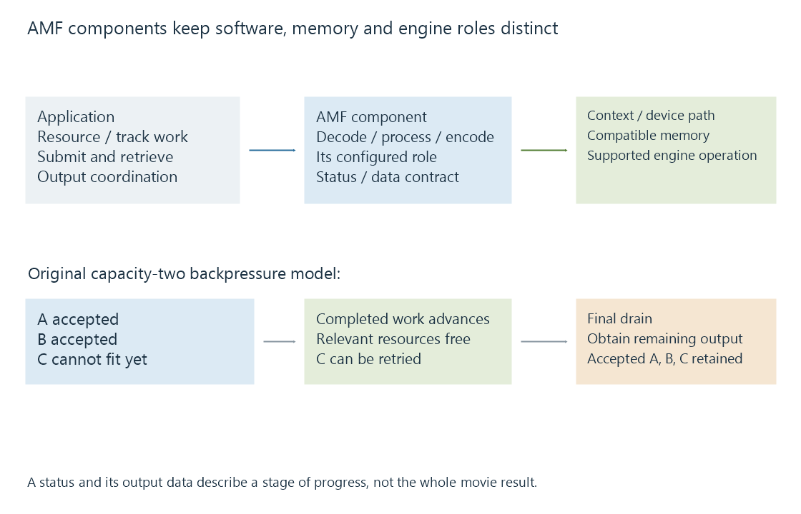

AMD Advanced Media Framework (AMF)
AMD AMF is a component framework that connects media applications to supported AMD decoding, encoding and processing paths with defined memory and asynchronous data-flow behavior.
Advanced Media Framework, or AMF, is AMD's media component framework. It gives an application supported decoding, encoding and processing operations while coordinating their memory and device relationships.
AMF is software. VCN, UVD and VCE are media-engine names that can appear beneath the framework in different hardware generations.
Components preserve the media-stage roles

| Component role | Input and output to recognize |
|---|---|
| Video decoder | Selected encoded stream to decoded surfaces |
| Video encoder | Prepared pictures to compressed output |
| Video converter/processor | Picture configuration to another supported picture configuration |
| Application | Container access, selection, stage coordination and delivery |
AMD's video-decoder documentation states that container demultiplexing belongs to the application. A supported AMF decoder therefore needs the selected codec data rather than automatically interpreting every container file.
The components share a framework but keep their own configuration and result contracts. A decoder success does not report an encoder's target capabilities.
Device memory is configured in context
An AMF context connects components to their supported memory/device arrangement. A surface or buffer has a specific representation and ownership lifecycle.
The public API supports interoperability arrangements through appropriate graphics/compute interfaces. The usable options depend on the selected implementation, platform and runtime.
For an Emby path, the relevant facts are the initialized component, selected device, actual source/target properties and intervening processing. The AMF label provides one layer of that route.
Input acceptance and output readiness use separate calls
SubmitInput() supplies data to a component. QueryOutput() obtains its produced data. A component may need several inputs or asynchronous work before an output is ready.
| Result | Scoped interpretation |
|---|---|
| AMF_OK | Successful result under the method's contract |
| AMF_INPUT_FULL | Submission cannot accept more under its current queue/resource state |
| AMF_REPEAT | The output query should be tried later under its processing contract |
| AMF_EOF | The documented drain has reached its output end |
Some components can return AMF_OK with no output object when data is not ready. The application checks the data result as well as the status.
An original trace can therefore be:
Submit input A -> accepted
Submit input B -> accepted
Submit input C -> INPUT_FULL
Retrieve completed output -> queue/resources can advance
Retry input C -> accepted
The trace models backpressure. It does not report actual queue depth or a decoder error. Retrying C should preserve the same intended input rather than silently discard it.
Draining completes already submitted work
At an input end, a component may still hold media needed for delayed output. Drain() requests completion of that submitted work according to the component contract.
The application retrieves remaining output until the drain's completion indication. It does not treat the first empty output query as proof that the whole job has finished.
See Also
- AMD Video Core Next (VCN)
- AMD Unified Video Decoder (UVD, legacy)
- AMD Video Coding Engine (VCE, legacy)
- How media APIs connect applications to hardware
- Hardware encoding and software encoding
- The hardware decode-filter-encode pipeline